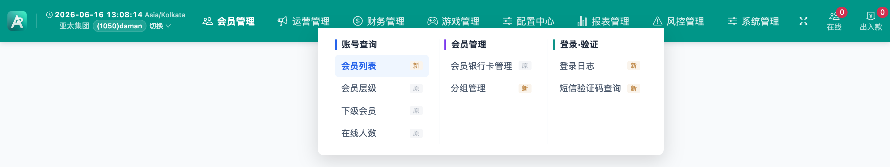
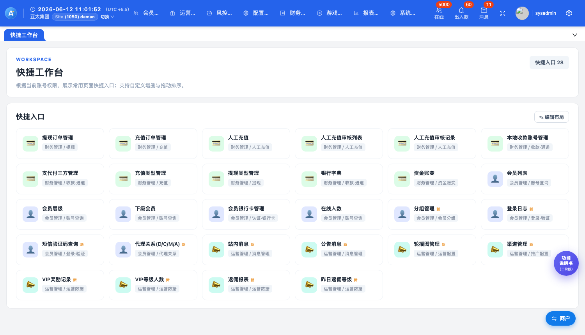
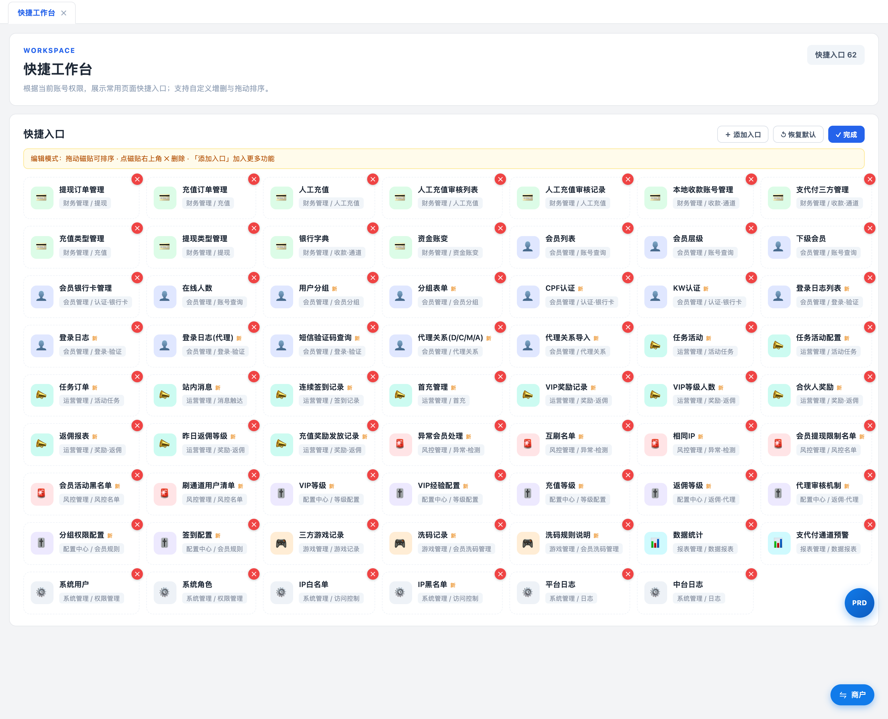
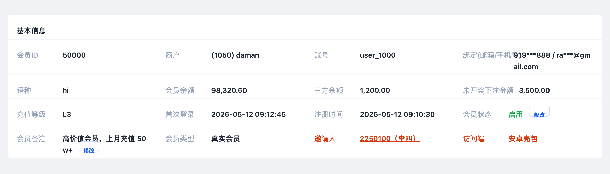
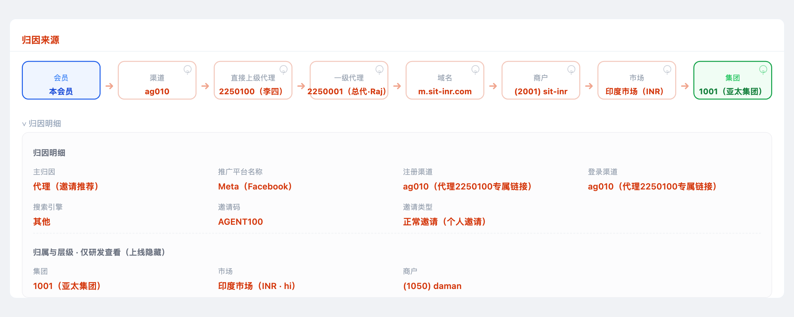
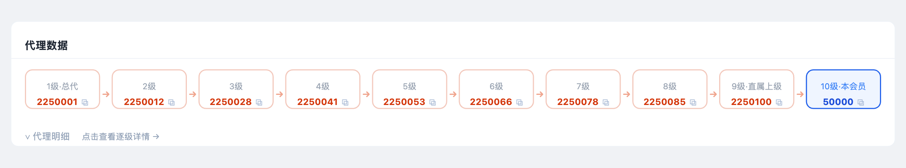
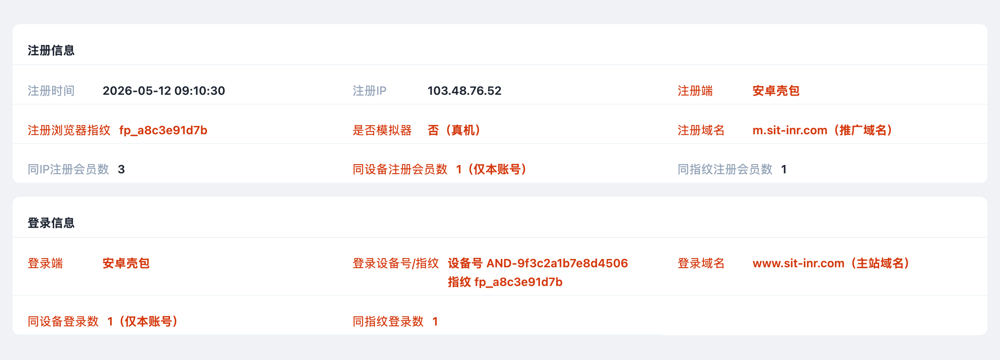
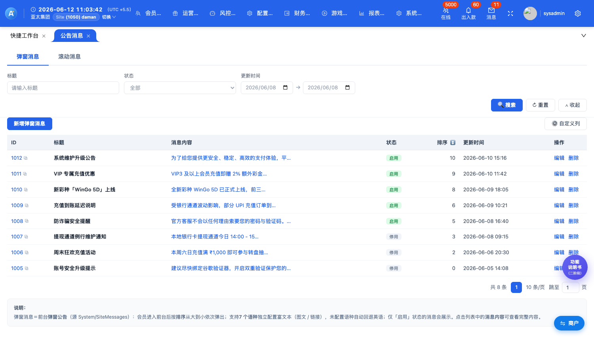
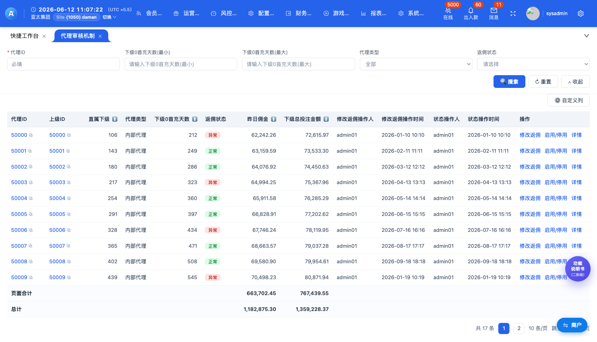
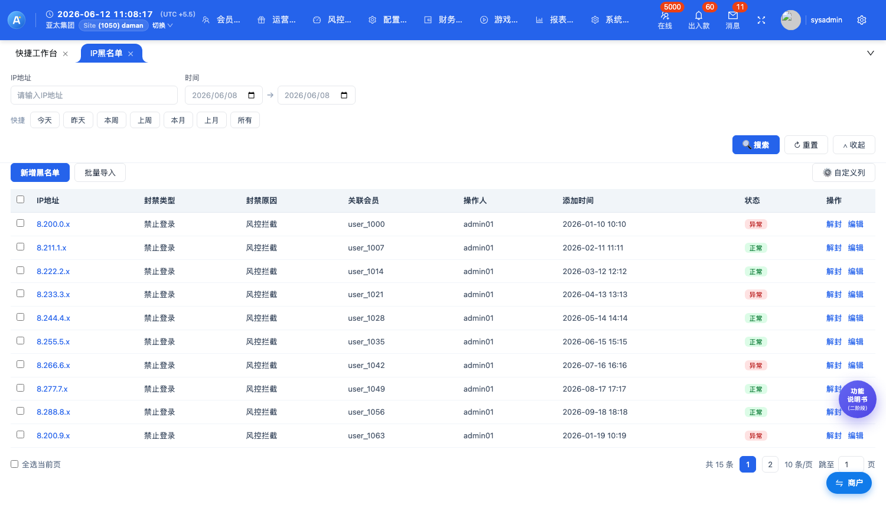

〇、文档说明
- 定位：本文是二阶段的功能说明书——面向使用者与验收者，把每个功能「怎么用、点了会发生什么」讲清楚。范围与验收标准见 二阶段 PRD，迁移进度见 工作计划书。
- 直达原型：每个功能标题旁的 查看 ↗ 可直接打开 localhost:8200 原型中的对应页面，边读边点验。
- 阅读方式：先读「二、通用交互规范」——所有列表页共用同一套骨架（筛选 / 表格 / 工具栏 / 弹窗），后续各页只描述专属交互，通用部分不再重复。
- 覆盖范围：会员管理 3 · 运营管理 12 · 风控管理 2 · 配置中心 5 · 系统管理 1，共 25 个已建功能页——其中 21 个已开放入口（顶部菜单 + 工作台「新」磁贴），推广配置的 域名管理 / 打包管理 / 埋点管理 / PWA配置 4 页已建完整交互、暂隐藏入口（仅 渠道管理 开放，见 §6）；另含对既有「会员列表 / 会员详情」的二阶段增强（§5.8）与 推广配置流程向导 / 配置说明 / 仿应用商店 等配套辅助页。
一、本期需求内容
二阶段（本期）需求范围速览——交付以 localhost:8200 可点击原型为准（真实交互、非占位）。
一句话：把旧后台（SitINR）里会员相关的功能搬进新后台并顺手升级——共 25 个功能页、一套新导航框架、一套「会员从哪儿来」的归因体系、一条广告投放配置链。下面五条就是本期交付的全部内容。
- ① 会员管理深度迁移 — 按 SitINR 对照补全会员相关功能并按分类优化重新归属，共已建 24 个功能页（已开放 20 · 推广配置 4 页暂隐藏）：会员管理 3 / 运营管理 12 / 风控管理 2 / 配置中心 5 / 系统管理 1（5 模块 · 12 子分类）。
- ② 顶部导航分类优化 — 8 大主 Tab 多列分组下拉（mega menu），「风控管理」「配置中心」从会员子项提升为一级模块；菜单项带 新 / 原 角标（§4.1）。
- ③ 快捷工作台与多标签页签栏 — 全功能磁贴聚合入口＋编辑布局（删除 / 拖拽排序 / 添加快捷入口，本地持久）；功能页以页签多开并存、切换、关闭（§4.2 / §4.3）。
- ④ 会员详情归因字段＋会员列表增强 — 会员详情按指定位置注入红字归因字段（归因来源 / 代理数据 / 注册登录）；会员列表同步红色列（自定义列显隐）＋「领取返佣 / 对上级返佣」行内配置开关（§5）。
- ⑤ 推广分发配置（二阶段核心） — 域名 → 打包 / PWA → 渠道 → 埋点 串成投放配置链，支持 安卓APK / iOS原生 / 安卓壳包 / iOS壳包 / H5链接 / PWA 六种分发形态；现阶段仅 渠道管理 开放入口，其余 4 页已建暂隐藏（§6）。
本期同步调整：移除 KW认证 / CPF认证 / 代理关系导入、活动相关配置（首充管理 / 活动资讯 / 邀请任务 / ARB提现 等）与 会员洗码管理；「会员分组＋分组表单」融合为分组管理一页。逐项明细见 工作计划书 · 二阶段介绍。
二、通用交互规范（所有列表页共用骨架）
以下规范适用于二阶段全部列表页。后文各功能只写「专属交互」，未提及的部分一律按本节执行。
所有列表页长得都一样：上面是筛选条件、中间是表格、右上是操作按钮；点任何「操作」都会弹窗确认，做完有提示。这一节把这套「通用骨架」一次讲清，后面每个功能页只讲它特有的部分，不再重复。
2.1 筛选区
- 布局：标签在上、控件在下，一行多列；商户下拉恒在首位。
- 商户筛选（全局） 本期：所有查询页筛选区均带商户下拉，选项 = 所有商户 + 各商户；默认选中＝顶栏当前商户（与左上角集团→商户切换器一致），切换下拉即过滤下方列表数据并 Toast「已切换商户：×，共 N 条」；选「所有商户」查看全部。
- 时间类条件合并为一组「开始 → 结束」日期对；带时间的页面在筛选区下方提供快捷时间胶囊：今天 / 昨天 / 本周 / 上周 / 本月 / 上月 / 所有，点选高亮。
- 筛选条件超过 6 个时，第 7 个起自动折叠，点 ▽ 高级筛选 展开 / 收起。
- 按钮：🔍 搜索（按全部已填条件即时过滤，完成后 Toast「查询完成，共 N 条」）、↻ 重置（清空条件、商户复位为顶栏当前商户并还原列表）。
- 会员ID 输入框支持多 ID 空格分隔查询；文本条件为模糊匹配。
2.2 工具栏
- 新增 ×××：蓝色主按钮，打开新增表单弹窗。
- 导出：把当前筛选结果导出为 CSV 并真实下载（文件名 = 页面名.csv），完成后 Toast「已导出 N 条」。
- 批量 ×××：必须先勾选行，未勾选时 Toast「请先勾选要操作的数据」；勾选后弹二次确认「确认对已选 N 条执行「×××」？」，确定后执行并提示。
- 右侧 ⚙ 自定义列：弹出列清单，勾选控制各列显示 / 隐藏。
2.3 表格
- ID 列：蓝字 + ⧉ 复制图标，点击复制并 Toast「已复制 ×××」；会员ID 还可点击下钻打开「会员详情」抽屉。
- 商户列（全局） 本期：所有查询页列表首列展示「商户」蓝色 pill；IP 为蓝色链接；状态用 绿（正常/启用）/ 红（异常/禁用）/ 灰（停用）badge。
- 金额 / 数值列右对齐，表头带 ↕ 排序图标，点击按 升序 ↑ / 降序 ↓ 切换排序。
- 含金额列的页面在表尾显示「页面总计 / 总计」双行（页面总计＝当前页、总计＝全部结果；人数 / 次数类数值列一并纳入）；合计为汇总数据、字体为常规黑色（非红字——红字仅表示新增字段）。
- 图片缩略图悬停预览：列表 / 详情弹窗中的图片缩略图及表单已上传图，鼠标移入即浮层放大预览（移开 / 滚动 / 点击自动收起）。
- 列宽规则：ID / 数值 / 开关 / 时间列固定宽度，文本列弹性伸缩；操作列冻结固定在表格最右（横向滚动时钉住不动、左侧带分隔阴影），按内容自动收缩、不留尾部空白（详见 §2.4）。
- 有批量操作的页面，首列为复选框，并提供「全选当前页」。
- 行内开关（如 开启状态、银行字典启用、会员列表「领取返佣 / 对上级返佣」红色列等）：点击弹确认「确认要开启/关闭…吗？」，确定后开关翻转并 Toast。
2.4 行操作（操作列文字链接）
- 编辑 / 修改 / 配置 → 打开表单弹窗（带当前值回填），保存后 Toast「保存成功」。
- 详情 / 查看 / 明细 → 打开只读详情弹窗（字段名-值网格）。
- 删除 / 移除 / 解除 / 解封 / 驳回 → 二次确认后从列表移除并 Toast「××成功」。
- 启用 / 停用 / 上架 / 下架 → 即时切换状态并 Toast。
- 操作列冻结贴右：操作列固定吸附在表格最右，列很宽需横向滚动时始终可见，左侧带分隔阴影区隔；层级高于页面浮动元素，任何浮标不得遮挡操作按钮。
- 横向滚动位置保持：排序 / 翻页 / 切换开关 / 展开收起等触发表格重绘后，横向滚动位置保持不变，表格停在当前查看位置、不会跳回最左。
- 操作过多自动折叠：行操作较多时默认只显示主操作，末尾「更多 »」展开 /「« 收起」收起其余操作（如会员列表折叠为「修改密码」，展开补「三方信息」）。
2.5 弹窗与反馈体系
| 类型 | 规格 |
|---|---|
| 表单弹窗 | 宽 760px（复杂表单 800–860px），双列字段栅格；底部「取消 / 保存」；标题区 ✕ 可关闭；点遮罩可关闭。图片字段（图片 / 封面 / 图标等）自动渲染为上传控件：点击选图 → 缩略回显 → ✕ 移除，已上传图悬停放大预览。 |
| 详情弹窗 | 只读字段网格（名称灰 / 值黑），仅「取消」键。 |
| 确认弹窗 | 小窗（440px）「操作确认」，取消 / 确定；所有危险与批量操作必经此弹窗。 |
| Toast 提示 | 顶部居中深色条，约 1.6 秒自动消失；所有操作均有结果反馈。 |
2.6 分页与页面说明
- 分页条：共 N 条 / 页码（超 7 页省略显示）/ 每页条数下拉（10 / 20 / 50 / 100，可选） / 「跳至 _ 页」输入框。
- 页面底部「说明：」灰框：解释该页业务口径、数据来源（SitINR 源路由）与特殊规则。
三、会员管理深度迁移（4 新增页）
3.1 分组管理 融合页 查看 ↗
入口：会员管理 → 会员分组。原 SitINR「会员分组 + 分组表单」两页融合为一页（列表 + 增改弹窗）。
把会员按「充值多少、投注多少」自动分到不同小组，再给每组配不同待遇（能不能提现、能不能参加活动）——好比超市把顾客分成金卡银卡，各享各的权益；满足条件系统自动归组，不用人工挑。

原型截图 · 分组管理：列表 + 行内「开启状态」开关，表尾自动合计
| 列表字段 | 分组ID · 商户 · 分组名称 · 分组人数 · 充值金额 · 充值次数 · 投注金额 · 创建时间 · 最后更新时间 · 状态（badge 纯展示列，开=绿 / 关=灰，不可点） |
| 筛选 | 分组名称 / 商户 |
| 工具栏 | 新增分组🔄 刷新 |
| 行操作 | 编辑（原「分组权限」入口已并入编辑弹窗，操作列仅保留 编辑） |
| 专属交互 | 整表内容居中（本页所有列表头与单元格均居中对齐）；表尾「已选合计」实时统计勾选行的 分组人数 / 充值金额 / 充值次数 / 投注金额 四列 |
3.2 登录日志 增强迁移 查看 ↗
入口：会员管理 → 登录·验证。SitINR LoginLog 迁移，并新增 设备ID / 浏览器指纹 维度。
记录每个会员每次登录的时间、IP、设备——会员说「账号不是我登的」或者风控怀疑账号被盗时，到这里回查他什么时候、在哪儿、用什么手机登录过。

原型截图 · 登录日志：设备与浏览器指纹融合列
| 筛选 | 会员ID（多 ID 空格分隔）/ IP / 设备ID / 浏览器指纹 / 时间范围 + 快捷时间 |
| 列表字段 | 会员ID（点击下钻会员详情）· 登录设备 / 浏览器指纹（合并列，按终端二选一：App / 壳包端显示设备名，H5 / 浏览器端显示浏览器指纹，不同时堆叠两行）· 设备ID · 登录IP/登录地区 · 登录时间 |
| 工具栏 | 导出（纯查询页，无行操作） |
说明区指引：相同 IP 的聚合分析请使用 风控管理 / 同IP/设备检测（本页只做逐条明细）。
3.3 短信验证码查询 新增 查看 ↗
入口：会员管理 → 登录·验证。源 SitINR UserInfo/SmsList（同名页面）。
会员抱怨「收不到验证码」时，客服在这里查：短信到底发没发出去、验证码是多少、什么时候发的——一查便知是通道没发出去，还是会员自己看漏了。

原型截图 · 短信验证码查询
| 筛选 | 手机号码 / 验证码 |
| 列表字段 | 手机号码（脱敏显示）· 验证码 · 业务类型 · 内容 · 发送时间 · 状态 · 发送IP |
| 工具栏 | 导出（只读查询页，无行操作） |
四、全局框架交互（顶部导航 / 页签栏 / 快捷工作台）
4.1 顶部导航（8 大主 Tab）
整个后台的「骨架」：顶部 8 个大菜单按职责分类，鼠标放上去展开分组清单，新功能带「新」字角标——找功能像逛超市看货架指示牌。

原型截图 · 顶部导航：多列分组下拉（新 / 原 角标）
- 主 Tab：会员管理 / 运营管理 / 风控管理 / 配置中心 / 财务管理 / 游戏管理 / 报表管理 / 系统管理，按使用频率与职责归类，定义如下：
# 模块 职责定义 ① 会员管理 会员账号、层级、分组、代理关系与登录验证等会员行为与数据查询 ② 运营管理 拉新促活的运营工具：消息推送、公告、Banner、推广渠道、运营数据 ③ 风控管理 本期提升为一级 会员行为风控：异常会员、对打 / 互刷、同IP/设备检测 等监控与处置 ④ 配置中心 本期提升为一级 低频规则配置：VIP 等级 / 经验、返佣等级、代理审核、分组权限等无需频繁改动的内容 ⑤ 财务管理 资金变动相关的配置与数据：充值 / 提现、收款通道、人工充值、资金账变 ⑥ 游戏管理 游戏配置与数据：排序 / 入口开关、三方游戏投注与结算记录 ⑦ 报表管理 各类经营数据报表与数据预警 ⑧ 系统管理 SaaS 系统账号、角色权限与访问控制（IP 黑白名单）、日志 - 悬停 / 点击主 Tab 展开多列分组下拉（mega menu）：每列一个子分类，分类标题蓝色加粗；菜单项右侧带「新」（二阶段新增）或「原」（一阶段已有）角标。
- 点击菜单项 → 对应页面作为页签打开并激活；再次点击已打开的项只切换不重复开。
- 运营管理下拉含 3 组：运营配置 / 推广配置（现阶段仅开放 渠道管理；域名 / 打包 / 埋点 / PWA配置 暂时隐藏入口，页面保留可直链访问）/ 运营数据。
4.2 多标签页签栏
- 每个打开的功能页占一个页签，可点击切换、✕ 关闭；至少保留一个页签。
- 「快捷工作台」始终作为第一个页签存在。
4.3 快捷工作台 查看 ↗
常用功能做成一块块「磁贴」摆在首页，点谁开谁；磁贴可以自己增删、拖来拖去排顺序——就像整理手机桌面的 App 图标，摆好后刷新也不会丢。


- 入口：点击左上角 Logo 随时回到工作台。
- 内容：全部功能的磁贴入口（默认展示 财务 / 会员 / 运营 三类常用磁贴，其余模块可自行添加），每个磁贴显示 功能名 + 所属路径（如「运营管理 / 消息管理」），二阶段新增功能带「新」角标。
- 交互：点磁贴 → 打开对应页签；✎ 编辑布局 进入编辑态后可删除磁贴、拖拽排序、添加快捷入口，布局本地持久保存（刷新不丢）。
五、会员详情 · 新增归因字段＋会员列表增强
二阶段在「会员详情」真实抽屉按指定位置注入的红字新增字段（原布局不变），共 27 个，分 归因来源 / 代理体系 / 注册登录设备 三组；会员列表同步红色新列（可在「自定义列」显隐）。完整词条另见 全字段说明，判定逻辑见 归因流程图。
给每个新注册会员盖一个「从哪儿来」的章：是广告带来的、朋友邀请的、官方推广来的，还是自己搜来的。这个章注册时盖下、永不再改——之后算广告费值不值、佣金分给谁，全凭这个章。
📖
会员详情 · 新增字段说明27 个红字字段完整词条 ＋ 归因矩阵
打开 ↗
5.1 归因来源与判定规则 查看 ↗
- 详情抽屉「归因来源」红字字段展示主归因结果，旁带 ? 图标，点击弹出四种类型简介；下方「归因明细」可折叠展开判定流程图。
- 判定优先级（命中即停）：广告投放 ＞ 邀请来源 ＞ 官方直推 ＞ 自然流量；全部解析失败并入自然流量。
- 归因明细呈现 8 个字段：主归因 / 推广平台名称 / 注册渠道 / 登录渠道 / 搜索引擎 / 邀请码 / 邀请类型 / 邀请人；逐项定义见 3.3 字段表。

原型截图 · 会员详情「基本信息」：红字新增字段 邀请人（可点击下钻）与 访问端

原型截图 · 会员详情「归因来源」：会员→渠道→代理→域名→商户→市场→集团 链路（角标 ? 点击看说明），下方「归因明细」展开后逐项展示红字归因字段
5.2 归因判定流程（注册 → 固化 五步）
- ① 进入：用户点击 推广链接 / 广告 / 邀请链接 / 搜索结果 → 进入注册页。
- ② 采集来源信号：URL 参数（渠道码
ch=/ 邀请码inv=/ UTM）· 广告点击ID（fbclid / gclid / ttclid）· 官方链接标识 · Referrer 来路 · 设备指纹 / IP。 - ③ 归因判定（优先级唯一 · 命中即停 · 就高不就低）：广告 UTM / clickid → 广告投放；有效邀请链接 / 邀请码 → 邀请来源（同时挂入代理树）；官方推广链接 → 官方直推；自然访问（无来源参数）或全部解析失败 → 自然流量（失败原因记日志）。
- ④ 归因固化：注册成功时一次性写入会员归因字段，注册后不可改写（划拨 / 撤代 / 关渠道均不影响）；「登录渠道」每次登录另行记录，用于对比拉新来源与活跃来源。
- ⑤ 展示：会员详情「归因来源」板块（红字）＋ 会员列表红色归因列（自定义列可开）。
并存与细分规则：邀请链接与广告 UTM 并存 → 判广告投放，邀请码留作辅证、仍挂代理树计返佣并标「裂变获客」。邀请来源再分三类
invite_type：正常邀请 normal（个人码/链接）/ 转盘活动邀请 wheel / 邀请任务 task——三类都进代理树、都归上级代理；活动邀请额外触发对应活动奖励并记 invite_activity_id。18 种边界情况逐条见 3.6 归因穷举矩阵。5.3 归因与来源字段（9）
| 字段 | 定义 | 主要用途 |
|---|---|---|
邀请人inviterId | 邀请码发起人 ID（通常＝直接上级代理），点击可下钻该会员详情。 | 裂变追踪、代理树构建、佣金归属判定 |
访问端accessClient | 最近一次访问的客户端类型：pc / h5 / 安卓 / ios / 安卓壳包 / ios壳包。 | 设备分布分析、端侧问题定位、风控识别 |
主归因mainAttribution | 注册来源唯一归类：广告投放 / 邀请来源 / 官方直推 / 自然流量（解析失败并入自然流量）；优先级唯一、命中即停。 | 获客成本核算、渠道质量评估、ROI 口径 |
推广平台名称promoPlatform | 识别出的外部推广平台：带平台点击ID精确识别（Google-gclid / Meta-fbclid / TikTok-ttclid 等）。 | 平台维度投放效果与对账 |
注册渠道regChannelId | 注册时命中的后台定义渠道（如 apk-fb-me001-01＝Facebook-鳗鱼01；邀请/自然流量记实际入口的官方渠道）。 | 渠道维度注册转化统计与结算 |
登录渠道loginChannelId | 最近一次登录命中的渠道 ID，可与注册渠道不同。 | 活跃来源分析、再营销渠道评估 |
搜索引擎searchEngine | 由 referrer 来源域名识别（Google / Bing / Yahoo / DuckDuckGo 等，未识别记「其他」，无 referrer 记「直接访问」）。 | SEO 效果评估、自然流量质量 |
邀请码inviteCode | 注册实际使用的邀请码，关联邀请人 / 代理ID。 | 代理树绑定、裂变奖励触发 |
邀请类型invite_type | 邀请来源细分：正常邀请（个人码/链接）/ 转盘活动邀请 / 任务活动邀请。 | 区分个人邀请与活动裂变并触发对应奖励 |
5.4 代理体系字段（8）
| 字段 | 定义 | 主要用途 |
|---|---|---|
一级代理rootAgentId | 该会员所在代理树的顶级（根）代理。 | 总代业绩归集、大代理线监控 |
直接上级代理parentAgentId | 代理树中该会员的直接父节点（＝邀请人）。 | 一级返佣计算、直属关系展示 |
代理层级agentLevel | 当前深度 / 最大允许层级（如 3 / 10）。 | 多级返佣分成、防无限级嵌套 |
代理路径agentPath | 根→本会员的完整代理 ID 链；超过 3 层折叠为「一级 → … → 直接上级 → 本人」，点击查看 10 级关系图（节点可复制代理ID）。 | 上下级核查、多级返佣溯源 |
佣金模式commissionMode | 代理收益方式：返佣＝投注流水返佣 / 返利＝亏损分成返利。 | 代理结算口径、差异化激励 |
返佣等级rebateLevel | 会员自身返佣档位，决定投注流水返佣比例（如 Lv3＝0.5%）。 | 返佣计算、等级化激励 |
领取返佣 / 对上级返佣rebateToUpline | 两个可配置开关（列表行内 toggle，切换二次确认）：是否领取返佣 / 产生的流水是否为上级计提返佣。 | 内部号/测试号关闭不计佣 |
代理状态agentStatus | 代理资格状态（生效 / 冻结 / 注销），与会员账号状态独立。 | 冻结作弊代理返佣但保留玩家身份 |

原型截图 · 会员详情「代理数据」：10 级代理关系链（1级·总代 → 10级·本会员），每个节点可点击复制代理ID；「点击查看逐级详情」打开代理线全链路表
5.5 注册 / 登录设备字段（10）
| 字段 | 定义 | 主要用途 |
|---|---|---|
注册端regClient | 注册时使用的客户端：pc / h5 / ios / 安卓 / ios壳包 / 安卓壳包。 | 注册端转化分析、APP 渗透率 |
注册设备号 / 指纹regDeviceId + regFingerprint | 设备号（原生包稳定 ID，壳包/H5 阶段可能为空）＋ 浏览器指纹（前端采集，如 fp_a8…）合并展示。 | 多开/养号识别、设备维度风控 |
是否模拟器isEmulator | 注册设备是否为模拟器 / 虚拟环境。 | 批量注册与作弊识别 |
注册域名regDomain | 注册时进入的域名（属本商户）；域名定上下文、渠道定来源。 | 推广域名效果归集 |
同设备注册会员数sameDeviceRegCount | 与本会员同一注册设备（设备号/指纹）注册的账号总数。 | 工作室/养号识别、设备聚合风控 |
登录端loginClient | 最近一次登录的客户端（枚举同注册端）。 | 活跃端分析、端一致性风控 |
登录设备号 / 指纹loginDeviceId + loginFingerprint | 最近一次登录设备的稳定 ID 与浏览器指纹，合并展示。 | 常用设备识别、异常登录监控 |
同设备登录数sameDeviceLoginCount | 与本会员同一设备登录过的账号总数。 | 共享设备/工作室识别 |
同指纹登录数sameFingerprintLoginCount | 与本会员同浏览器指纹登录过的账号总数。 | 关联账号识别、登录聚合风控 |
登录域名loginDomain | 最近一次登录进入的域名，可与注册域名不同。 | 回流入口分析、域名切换监控 |

原型截图 · 会员详情「注册信息 / 登录信息」：注册端 · 设备号/指纹 · 是否模拟器 · 注册域名 · 同设备/同指纹聚合数 等红字风控字段
5.6 归因穷举矩阵（5 大类型 × 18 种情况，点击表头跳转字段说明）
左列与表头冻结，右侧「页面呈现 · 归因明细」可横向滑动；点击 主归因 ～ 邀请类型 表头跳至上方字段定义。
| 类型 | 编号 | 触发标识 | → | 页面呈现 · 归因明细（点击表头跳转字段说明） | |||||||||
|---|---|---|---|---|---|---|---|---|---|---|---|---|---|
| 推广标识 (clickid/UTM) | 邀请码 | 官方链接标识 | 搜索 referrer | 主归因 | 推广平台名称 | 注册渠道 | 登录渠道 | 搜索引擎 | 邀请码 | 邀请类型 | |||
| ① 广告投放 | A1 | ✓ 点击ID | ✗ | － | － | → | 广告投放 | Facebook-鳗鱼01 apk-fb-me001-01 | 同注册渠道 | — | — | — | |
| A2 | ✓ UTM 清单内 | ✗ | － | － | → | 广告投放 | Instagram-奥运01 h5-ig-ay002-01 | 同注册渠道 | — | — | — | ||
| A3 | ✓ UTM 清单外 | ✗ | － | － | → | 广告投放 | 其他 | 其他投放-鳗鱼01 h5-ads-me001-01 | 同注册渠道 | — | — | — | |
| A4 | ✓ | ✓ 有效码 | － | － | → | 广告投放 | Facebook-鳗鱼01 apk-fb-me001-01 | 同注册渠道 | — | AGENT100 | 正常邀请 | ||
| A5 | ✓ | ✓ 无效码 | － | － | → | 广告投放 | Facebook-鳗鱼01 apk-fb-me001-01 | 同注册渠道 | — | AGENT100 | — | ||
| B2 | ✓ 平台自动附加 | ✗ | ✓ | － | → | 广告投放 | 官方渠道 h5-01 | 同注册渠道 | — | — | — | ||
| ② 邀请来源 | A6 | ✗ | ✓ 个人码·手填 | － | － | → | 邀请来源 | — | Facebook-鳗鱼01 apk-fb-me001-01 | 同注册渠道 | — | AGENT100 | 正常邀请 |
| B3 | ✗ | ✓ 个人码 | － | － | → | 邀请来源 | — | 官方渠道 h5-01 | 同注册渠道 | — | AGENT100 | 正常邀请 | |
| B4 | ✗ | ✓ 转盘活动码 | － | － | → | 邀请来源 | — | 官方渠道 h5-01 | 同注册渠道 | — | WHEEL8001 | 转盘邀请 | |
| B5 | ✗ | ✓ 任务活动码 | － | － | → | 邀请来源 | — | 官方渠道 h5-01 | 同注册渠道 | — | TASK8002 | 任务邀请 | |
| B6 | ✗ | ✓ 活动码过期 | － | － | → | 邀请来源 | — | 官方渠道 h5-01 | 同注册渠道 | — | WHEEL8001 | 正常邀请 | |
| ③ 官方直推 | B1 | ✗ | ✗ | ✓ | － | → | 官方直推 | — | 官方渠道 h5-01 | 同注册渠道 | — | — | — |
| ④ 自然流量 | A7 | ✗ | ✗ | ✗ | ✓ 非搜索 | → | 自然流量 | — | Facebook-鳗鱼01 apk-fb-me001-01 | 同注册渠道 | 其他 | — | — |
| B7 | ✗ | ✗ | ✗ | ✓ 清单内引擎 | → | 自然流量 | — | 官方渠道 h5-01 | 同注册渠道 | — | — | ||
| B8 | ✗ | ✗ | ✗ | ✓ 清单外/非搜索 | → | 自然流量 | — | 官方渠道 h5-01 | 同注册渠道 | 其他 | — | — | |
| B9 | ✗ | ✗ | ✗ | ✗ | → | 自然流量 | — | 官方渠道 h5-01 | 同注册渠道 | 直接访问 | — | — | |
| ⑤ 解析失败（并入自然流量） | B10 | 有参数但全部解析失败（损坏 / 伪造 / 过期） | → | 自然流量 | — | 官方渠道 h5-01 | 同注册渠道 | 直接访问 | — | — | |||
| B11 | ✗ | ✓ 无效码 | ✗ | ✗ | → | 自然流量 | — | 官方渠道 h5-01 | 同注册渠道 | 直接访问 | AGENT100 | — | |
5.7 推广 → 归因（现阶段：仅渠道管理）
- 建渠道（运营管理 / 推广配置 / 渠道管理）：创建渠道（H5 / 官方渠道）→ 绑定跳转域名 → 生成带渠道码的渠道链接投放。
- 获客归因：会员经渠道链接注册后，按 5.2 流程判定主归因并固化字段——渠道码落到「注册渠道」，写入「归因来源」。
现阶段推广配置仅开放渠道管理；域名 / 打包 / 埋点 / PWA、回传归集与 ROI 闭环等端到端环节，待对应模块开放后再补充说明。渠道管理页面交互详见本说明书「六、推广分发配置」。
5.8 会员列表 / 会员详情（二阶段增强） 既有页增强 查看 ↗
老页面加新料：统一加了商户筛选与商户列；操作列收窄成「修改密码 + 更多」；返佣开关做成可显隐的红色列；会员详情新增可编辑昵称，并按原布局插入红字新字段——红字＝本期新增，一眼分清新旧。

原型截图 · 会员列表：商户筛选 + 批量操作 + 红色归因列（自定义列可开）
- 商户筛选 + 商户列 本期：筛选区首位「商户」下拉（选项 = 所有商户 + 各商户），默认＝顶栏当前商户，切换即过滤下方数据；列表首列展示「商户」蓝 pill。此为全局规范，所有查询页一致（见 §2.1 / §2.3）。
- 操作列精简 + 折叠展开 本期：操作列默认只显示「修改密码」，末尾「更多 »」展开「三方信息」、「« 收起」收起（原「修改用户名 / 删除」已去除）；操作列冻结贴右、按内容收窄不留白。
- 返佣配置开关（红色列） 本期调整：「领取返佣」「对上级返佣」为行内 toggle 红色列（默认随其它红列显示，可在「自定义列」显隐），不并入操作列；点击弹「确认要开启/关闭该会员的「××」吗？」，确定后翻转并 Toast。
- 表头分组归类（数据列重排）：会员列表所有数据列按类目重新排列并归组，列名行之上新增一行分组标签——商户 / 会员 / 账户资金 / 等级分组 / 状态 / 渠道归因 / 代理数据 / 注册设备 / 登录设备 / 其它；分组随列一起冻结，横向滚动时分组标签与所属列始终对齐。「自定义列」弹窗同样按组分块展示（每组小标题带计数 + 组内两列复选框），与表头归类一致。
- 列精简 本期：移除「积分」列（低频，详情可查）；其余列可经「自定义列」自由显隐。
- 会员详情 · 新增昵称（只读） 本期：基本信息区「账号」后新增「昵称」字段，仅展示、不可修改（无「修改」按钮）；会员状态 / 会员备注仍为同款可编辑交互。
- 归因红字字段：会员详情抽屉按指定位置注入红色字段（原布局不变）——归因来源（带 ? 图标点击看类型简介 + 归因明细折叠流程图）、代理数据（含 10 级代理关系图，点击节点复制代理ID）、注册 / 登录信息（注册端 / 设备号 / 指纹 / 域名 / 同设备注册数等）。
- 红字字段在列表中同步为红色新列（可在「自定义列」勾选显隐）；邀请人、代理路径可点击下钻。
六、推广分发配置
入口：运营管理 → 推广配置。完整配置链为 域名管理 → 打包管理 → 渠道管理 → 埋点管理（PWA配置为增强）；现阶段渠道形态仅 H5 / 官方渠道，本期只开放 渠道管理，其余四页（域名管理 / 打包管理 / 埋点管理 / PWA配置）已建完整交互、暂隐藏入口，待渠道形态扩展开放后在本章补充说明。
渠道管理 查看 ↗
⚠ 最新口径（见§十一）：渠道管理已精简为仅官方渠道——列表 渠道ID / 渠道名称 / 渠道标识 / 状态 / 创建时间；弹窗 渠道名* / 域名地址 / 渠道编码（留空自动生成）/ 赠送金额 / 打码量倍数 / 备注；行操作 编辑 / 删除。下方为此前版本规格，待整体改写。
每条对外投放的链接都先在这里登记成一个「渠道」，系统生成专属推广链接发出去——之后谁从哪条链接进来注册，后台自动记到对应渠道头上，哪条链接拉新多一目了然。

原型截图 · 渠道管理：渠道链接行内复制 + 推广链接开关 + 埋点类型 badge
| 渠道形态 | 现阶段仅支持 H5 链接 与 官方渠道（暂无 APK / PWA / 原生安装包形态） |
| 列表字段 | 渠道ID（可复制）· 渠道名称 · 渠道标识（代码 tag）· 所属商户 · 推广商 · 渠道类型（H5 / 官方渠道 badge）· 埋点类型（Google Ads / Meta / TikTok / Kwai / 无埋点 彩色 badge）· 跳转域名 · 渠道链接（行内「复制」） · 是否推广链接（行内开关，点击二次确认；关闭后链接不可访问） · 赠送金额（渠道级注册赠送配置，>0 橙色高亮） · 状态 · 创建时间。仅含渠道字段，不含人数 / 充提等统计列 |
| 筛选 | 商户 / 渠道ID / 渠道名称 / 创建时间范围 + 快捷时间（今天～所有） |
| 工具栏 | 新增渠道批量新增（粘贴或上传 .csv「渠道名称,推广商,跳转域名」，实时识别计数 ≤200 条，默认 H5/无埋点/启用）批量设置赠送金额（勾选 → 输入金额 → 确认，统一回写各渠道赠送金额；打码倍数 / 触发条件仍由活动管理配置）批量调整推广链接状态（勾选 → 选 开启/关闭 → 确认，批量切换链接开关）导出 |
| 行操作 | 详情编辑测试回传停用 / 启用（随状态切换，二次确认）删除（确认「删除后渠道链接将立即失效」） |
七、运营管理（运营配置 / 推广配置 / 运营数据 · 7 功能页）
7.1 消息管理 · 站内消息（推送消息） 复杂表单 查看 ↗
入口：运营管理 → 消息管理。源 System/PushUserMessage：经 Firebase（FCM）/ 极光 向全体或指定用户推送通知。
给会员的手机发推送通知（就是手机顶部弹的那种消息）：可以全体群发，也可以挑人发，还能约个时间定时发。

原型截图 · 站内消息：推送列表（状态彩色 badge，未发送可编辑）
| 列表字段 | 消息ID · 标题 · 文字 · 图片（缩略图，悬停放大预览）· 名称 · 推送通道（Firebase / 极光）· 类型（全体 / 指定用户）· 状态（未发送 / 发送中 / 发送成功 / 部分成功 / 发送失败 彩色 badge）· 发送时间 · 最后修改时间 · 操作人 |
| 状态规则 | 未发送的消息可 编辑删除；已发送的仅可 详情（操作列按状态动态变化） |
| 工具栏 | 新增 |
- 通知标题（≤100 字）；通知文字为富文本编辑器：加粗 / 斜体 / 下划线 / 删除线 / 字号 / 文字颜色 / 无序列表 / 插入链接 / 插入图片 / 清除格式，≤500 字符。
- 图片：点击上传（JPG/PNG · 建议 720×360 · ≤1MB），可「清空图片」。
- 发送时间：日期时间选择器（可预约定时发送）。
- 推送通道单选 Firebase / 极光；选「极光」时出现「极光推送端」WEB端 / APP端 复选。
- 用户选择单选 全体 / 指定用户；选「指定用户」时出现 用户Id 文本域（逗号或换行分隔）＋ 📤 表格导入（.xlsx/.csv，按范本首列＝用户Id，单次 ≤1000 条、自动去重，导入后 Toast 统计）＋ 📥 下载导入范本（真实下载 CSV 模板）。
- 确认后 Toast「推送消息已添加/保存」。
7.2 消息管理 · 公告消息 双页签 + 多语种 查看 ↗
入口：运营管理 → 消息管理。源 System/SiteMessages（弹窗）+ SiteScrollMessages（滚动），1:1 对应双页签。
管 App 里两种公告：打开 App 时弹出来的「弹窗公告」，和首页顶部滚动的「跑马灯」。支持 7 种语言分别填写，没填的语言自动用英语顶上。

原型截图 · 公告消息：弹窗 / 滚动双页签
| 页签 | 弹窗消息（前台弹窗公告，按排序从大到小依次弹出）/ 滚动消息（首页顶部跑马灯，建议短文案）；点击页签即切换列表 |
| 筛选 | 标题 / 状态（全部 · 启用 · 停用）/ 更新时间范围 |
| 列表字段 | ID（可复制）· 标题 · 消息内容（摘要蓝链，点击查看完整内容：弹出详情窗＝ID/状态/排序/更新时间元信息条 + 标题 + 富文本全文 + 英语版本对照）· 状态（启用绿 / 停用灰）· 排序（可排序列）· 更新时间 |
| 工具栏 | 新增弹窗消息 / 新增滚动消息（随页签变化） |
| 行操作 | 编辑删除（确认「删除后前台将不再展示」） |
- 语种页签：英语 / 泰语 / 中文简体 / 马来语 / 阿拉伯语 / 泰米尔语 / 泰卢固语 共 7 个胶囊；每个语种独立保存标题与内容，切换语种自动暂存当前输入、回填目标语种（不丢内容）；已配置语种显示绿点标识；未配置语种前台自动回退英语。
- 标题（≤100 字，必填）；排序（数字越大越靠前，默认 0）；启用开关（开启后立即在前台展示）。
- 消息内容：富文本编辑器（与站内消息同款工具栏）。
- 保存：实时回写列表（标题 / 状态 / 排序 / 更新时间=当前时间），Toast「保存成功，该消息当前为「启用/停用」状态」；全语种标题均空时提示不保存。
7.3 运营配置 · 轮播图管理
管理 App 首页的轮播大图：传图、排顺序、设置点了跳哪儿——可以跳活动链接、跳某个游戏，或者跳在线客服。

原型截图 · 轮播图管理：缩略图悬停放大 + 三种跳转方式
| 页面 | 字段 | 操作 |
|---|---|---|
| 轮播图管理 查看 ↗ | 轮播ID · 图片路径（缩略图，悬停放大预览）· 跳转方式（跳转链接 / 跳转厂商或子游戏 / 跳转在线客服）· 跳转链接 · 排序 · 状态（显示 / 关闭）；筛选：显示状态 | 新增（表单含图片上传控件；跳转方式三选一：跳转链接→填 URL，跳转厂商或子游戏→游戏大类 → 厂商 → 子游戏 三级联动，跳转在线客服→无需链接；图片建议 768×300 PNG）；行：修改删除（源 System/Banners） |
7.4 运营数据（4 页）
四张现成的数据报表：VIP 奖励发了多少、各 VIP 等级各有多少人、每天返佣发了多少——只看数、不用配置。


| 页面 | 字段与交互 |
|---|---|
| VIP升级奖励记录 查看 ↗ | 会员ID · VIP等级 · 奖励金额 · 发放/领取时间 · 领取状态；导出＋详情 |
| VIP人数 查看 ↗ | VIP等级 · 会员人数 · 占比；导出＋查看会员（下钻该等级会员） |
| VIP操作日志 查看 ↗ | 订单号 · 时间 · 会员ID · 日志类型（经验奖励）· 领取(积分/余额) · 经验值 · 总经验 · 明细（投注EXP）；筛选 商户 / 会员ID / 订单号 / 状态 / 创建时间；导出（明细型流水，无勾选合计） |
| 返佣报表 查看 ↗ | 按日期汇总 彩票 / 电子 / 视讯 / 体育 / 小游戏 / 棋牌 六类「返佣金额 / 利率」；筛选 会员ID + 时间范围；导出 |
7.5 报表管理 · 代理报表（新增子分类）
报表管理新增「代理报表」子分类，归集代理 / 返佣维度的两张报表（由原运营数据迁入 + 新增）。
| 页面 | 字段与交互 |
|---|---|
| 代理报表 查看 ↗ | 按代理维度汇总团队业绩：代理ID / 账号 / 类型 · 直属下级 / 全部下级 · 团队 投注 / 中奖 / 充值 / 提现 / 盈亏 · 返佣金额 · 佣金模式 · 统计日期；筛选 商户 / 代理ID / 代理账号 / 代理类型 / 时间范围 + 快捷时间；导出；行 详情 / 下级列表；含页面总计 |
| 昨日返佣等级 查看 ↗ | （由运营数据迁入）日期默认昨日，团队人数 / 团队充值 / 游戏金额 · 返佣等级 · 五类游戏(投注金额/返佣金额) · 计算/派发返佣金额 · 派发时间；工具栏 仅导出（翻日按钮与行操作「详情」已按§十一移除）；五游戏各拆 投注金额/返佣金额 双列；含页面总计 |
八、风控管理（2 功能点）
盯坏人的两件套：① 异常会员处理——发现问题账号，一键回收余额、驳回提现；② 同IP/设备检测——揪出一个 IP 注册一堆小号的工作室。


| 页面 | 字段与交互 |
|---|---|
| 异常会员处理 查看 ↗ | 会员ID · 账号 · 会员状态 · 钱包余额 / 三方余额 / 保险箱余额 / 处理中提款金额（金额列页脚合计）；批量：回收余额 / 保险箱转出 / 驳回提现 / 余额扣除（勾选 → 二次确认 → Toast）；行操作同名四项（单条二次确认） |
| 同IP/设备检测 查看 ↗ | 检测维度顶部一行 tab：同注册IP / 同注册设备 / 同登录IP / 同登录设备（设备维度的「设备 / 浏览器指纹」合并为一列、按终端二选一显示）；列＝聚合标识（IP 或 设备/指纹）+ 同×人数；筛选 商户 / 会员ID / 标识 / 日期；导出。人数可点击下钻 本期：点任一「同×人数」即带该 IP / 设备标识跳转会员列表并自动查询，列出同 IP / 同设备的会员。源 SitINR「同IP报表」，改为风控检测页形态 |
九、配置中心（4 功能点）
不常改的规则都集中在这：VIP 怎么升级、多少钱换 1 点经验、返佣比例怎么定、代理审核门槛——设置一次管很久，改动要谨慎。



| 页面 | 字段与交互 |
|---|---|
| VIP等级 查看 ↗ | 名称 · 升级/保级/扣除经验（EXP）· 升级奖励 / 月奖励 / 充值奖励(%) / 赠送上限 / 保险箱日利率 / 四类洗码率 等完整等级参数；新增等级＋行 修改（表单弹窗回填） |
| 经验值配置（并入 VIP等级配置） 查看 ↗ | 按币种配置「金额 = 1 EXP」换算（INR 等）；行 修改 |
| 返佣等级 查看 ↗ | 等级参数列表；添加会员返佣等级批量删除（勾选+确认）；行 修改返佣等级删除 |
| 代理审核机制 查看 ↗ | 代理ID · 上级ID · 直属下级 · 代理类型 · 下级0首充天数 · 返佣状态 · 昨日佣金 · 下级总投注 · 修改操作人/时间；行：修改返佣启用/停用（即时切换+Toast）详情。源 UserInfo/UserReview（同名页） |
十、系统管理（1 功能点）
IP黑名单 新增 查看 ↗
入口：系统管理 → 访问控制。源 BlackIp/BlackIpView。与「IP白名单」（一阶段）相邻。
把恶意 IP 拉进黑名单：可以只禁登录、只禁注册或全部禁止；支持一次粘贴几百个 IP 批量导入，系统自动识别、自动去重。

原型截图 · IP黑名单：封禁类型 + 批量导入
| 筛选 | IP地址 / 商户 / 时间范围 + 快捷时间 |
| 列表字段 | IP地址 · 封禁类型（禁止登录 / 禁止注册 / 全部禁止）· 封禁原因 · 关联会员 · 操作人 · 添加时间 · 状态 |
| 工具栏 | 新增黑名单批量导入 |
| 行操作 | 解封（确认后从名单移除）编辑 |
- 支持两种来源：直接粘贴 IP（逗号 / 空格 / 换行分隔）到文本域，或 📤 选择文件 上传 .csv / .xlsx（按模板首列＝IP地址）；📥 下载导入模板 真实下载 CSV 范本。
- 输入实时解析：自动识别合法 IPv4、自动去重、单次 ≤500 条，旁侧实时显示「已识别 N 个 IP（去重后）」。
- 选择 封禁类型（默认 禁止登录）与 封禁原因（默认「批量导入」）。
- 确认导入 → 新 IP 插入列表顶部（操作人 / 时间自动写入），Toast「成功导入 N 条 IP 黑名单」；未识别到 IP 时提示且不导入。
十一、需求调整记录（交互设计 1–5 会话汇总）
五个「交互设计」会话（2026-06-09 ～ 06-12）拍板的全部调整，按模块汇总为变更台账；同一主题多次反复的，记最终口径。状态判定以 localhost:8200 当前实现为裁判。
这一章是「改过什么」的总账本：聊天里要求的每一处调整都记在这里，逐条可对照原型点验。正文章节如与本章冲突，以本章为准（正文随下轮更新对齐）。
11.1 全局通用控件与口径
| 页面 / 范围 | 调整内容（最终口径） | 类型 |
|---|---|---|
| 筛选区排版 | 栅格改 auto-fit 自适应（minmax 230px + dense）消除留白；时间字段双输入撑满格子 | 修改 |
| 筛选折叠 | 移除「高级筛选」折叠按钮、筛选项全部平铺；筛选项 >5 时显示「收起」整区折叠，≤5 不显示 | 口径 |
| 商户维度 | 含「商户」的筛选强制排首位；所有查询页加商户下拉（「所有商户」置顶，默认=顶栏商户）+ 首列商户列；商户视角自动隐藏商户列 | 口径 |
| 商户切换 | 顶栏切换商户后，当前列表页自动按该商户数据重渲染（数据隔离实时生效） | 修改 |
| 工具栏 | 导出按钮统一移至右侧「自定义列」旁；自定义列按钮仅列数 >10 显示；自定义列面板加「保存」后才生效 | 口径 |
| 分页条 | 新增每页条数下拉 10/20/50/100，替换写死的 10 条/页，各页独立记忆 | 新增 |
| 合计行 | 「页面合计 / 总计」双行、黑色字体（红色仅留给新增字段）；金额与人数/次数列均纳入 | 口径 |
| 操作列 | 按内容自动收缩贴右；动词统一：查看→详情、修改→编辑；Toast 统一「已 X」句式 | 口径 |
| 图片预览 | 所有缩略图与已上传图悬停弹 360×180 放大浮层，移开/滚动自动收起（轮播图按 768×300 上下文标题） | 新增 |
| 输入控件 | 数字输入框去掉步进箭头；输入框禁用自动填充图标；弹窗 textarea 固定尺寸禁止拖拽 | 修改 |
| 筛选下拉 | 全站替换为自定义下拉组件：当前项蓝底+勾选、商户编号蓝 pill | 修改 |
| 刷新按钮 | 改 32px 纯图标（SVG 旋转箭头），hover 蓝化+旋转动效 | 修改 |
| 横向滚动 | 表格重绘保持 scrollLeft：排序/翻页/开关切换后不再跳回最左 | 修改 |
11.2 菜单与模块归属
| 页面 / 范围 | 调整内容（最终口径） | 类型 |
|---|---|---|
| 整组/页面移除 | 代理关系（D/C/M/A）整组、代理关系导入、TG频道管理、对打查询、风控名单组、活动任务组；另删 7 个废弃功能（合伙人奖励 / 充值奖励发放记录 / 邀请奖励领取记录 / 连续签到记录 / 提现限制名单 / 刷通道清单 / 充值等级） | 删除 |
| 推广配置组 | 仅开放 渠道管理；域名 / 打包 / 埋点 / PWA配置 暂隐藏入口（页面与 ?open 直链保留） | 修改 |
| 报表管理 | 新增「代理报表」子分类：代理报表（新建页）+ 昨日返佣等级（自运营数据迁入） | 新增 |
| 归属迁移 | 会员返佣等级、代理审核机制 迁入 运营管理 / 返佣·等级 | 修改 |
| 分组合并 | 消息管理并入运营管理「运营配置」；财务 充值与提现合并为「充值/提现」；配置中心子分类改名「VIP相关配置」 | 修改 |
| 新增页面 | VIP操作日志（运营数据）、会员返佣等级（按会员强提返佣等级） | 新增 |
| 改名 | 相同IP→同IP/设备检测；VIP奖励记录→VIP升级奖励记录；VIP等级人数→VIP人数；渠道配置→渠道管理；会员返佣等级管理→会员返佣等级 | 文案 |
| 悬浮入口 | 右下角可拖动悬浮球「功能说明书（二阶段）」（位置记忆），隐藏原 PRD 浮标 | 新增 |
| 顶部导航 | mega 菜单加悬停桥接防消失；列标题/行高/新原角标视觉优化 | 修改 |
| 快捷工作台 | 磁贴卡片大小比例调整，铺满页面 | 修改 |
11.3 会员管理
| 页面 / 范围 | 调整内容（最终口径） | 类型 |
|---|---|---|
| 会员列表 · 结构 | 照 SIT 排版重排；列序 会员ID→昵称→会员账号；左冻结 勾选+会员ID+昵称、右冻结操作列；列按 9 类目分组表头；自定义列弹窗按同 9 组分块 | 修改 |
| 会员列表 · 删列 | 积分、代理路径、代理状态、三方余额、同设备/同指纹注册登录数 4 列 | 删除 |
| 会员列表 · 加列 | 「最后登录时间」（注册时间后）；「领取返佣 / 对上级返佣」定稿为红色普通列（代理数据组，行内开关+二次确认） | 新增 |
| 会员列表 · 操作 | 操作列去掉「删除」「修改用户名」；修改密码改 SitINR 同款单字段弹窗；批量操作补齐 SIT 全集（除转代理/隐藏）含各子弹窗；新增「导入批量操作」（模板/Excel/9 列校验/≤3000 条）；「批量添加用户」重做为表格式逐行录入 | 修改 |
| 会员详情 | 昵称字段新增后定稿只读；删除 经营币种、CPF 认证、上级代理ID、是否可领取返佣、归属与层级三字段（红字 30→27）；注册/登录信息拆两段、设备号/指纹合并展示；10 级代理关系图保留 | 修改 |
| 分组管理 | 定稿：状态列=badge 纯展示（行内开关撤回）；行操作仅 编辑（权限并入弹窗）；工具栏 新增分组+刷新；整表居中；「分组名称」筛选下拉动态来源于已建分组 | 修改 |
| 登录日志 | 与列表合并为单页；删登录ID列与「相同IP聚合」页签；登录设备 5 端与浏览器指纹融合一列（App/壳包显设备名、H5 显指纹二选一）；IP/地区列移至登录时间前 | 修改 |
| 短信验证码查询 | 去掉导出按钮（纯查询页） | 删除 |
| 同IP/设备检测 | 4 子页签：同注册IP / 同注册设备 / 同登录IP / 同登录设备；人数改蓝链点击下钻会员列表自动查询；去导出/操作列/商户筛选 | 修改 |
| 三方信息 | 删除 红包充值、谷歌充值、详情；FireBase/极光 Token 改可编辑保存 | 修改 |
11.4 运营管理
| 页面 / 范围 | 调整内容（最终口径） | 类型 |
|---|---|---|
| 站内消息 | 通知文字改富文本编辑器；图片上传+悬停预览；指定用户支持表格导入（范本下载/自动去重/≤1000 条） | 修改 |
| 公告消息 | 弹窗/滚动双页签+7 语种独立保存 定稿；工具栏去导出、筛选去快捷时间 | 修改 |
| 轮播图管理 | 跳转方式三选一（链接/厂商子游戏三级联动/客服）定稿；图片建议 768×300 | 修改 |
| 渠道管理 | 定稿：仅官方渠道；列表 渠道ID/渠道名称/渠道标识/状态/创建时间；弹窗 渠道名*（0/50）/域名地址/渠道编码（留空自动生成）/赠送金额/打码量倍数/备注；行操作 编辑/删除 | 修改 |
| 配置向导 | 改单页分板块一次保存；仅保留链接性字段（明细不重复呈现）；必传事件按平台锁定+优化事件多选（来源埋点管理）；新增测试回传、配置记录列表、平台说明 ? 图标；删投放监控与类型标签 | 修改 |
| VIP升级奖励记录 | 操作列「详情」删除（整列消失） | 删除 |
| VIP人数 | 3 列 10 行（等级ID/名称/人数，人数蓝色）；去占比列/详情/导出/筛选/商户列 | 修改 |
11.5 报表与配置中心
| 页面 / 范围 | 调整内容（最终口径） | 类型 |
|---|---|---|
| 代理报表 | 按 SitINR 重建：代理ID/类型/绝对层级/排序/日期筛选+周期切换（日/日区间/月/所有）；列为会员维度业绩明细（含脱敏手机号）；「下级列表」改真实下钻抽屉（代理报表/下级会员/会员层级三页统一） | 新增 |
| 昨日返佣等级 | 定稿：五游戏各拆「投注金额/返佣金额」双列分组表头；「游戏金额」全部改名「投注金额」；工具栏仅 导出（上一日/下一日与行操作「详情」移除） | 修改 |
| VIP等级配置 | 固定 10 级 VIP0–VIP9，去「新增等级」；修改弹窗隐藏 ID、名称只读 | 修改 |
| VIP经验配置 | 改三列结构：币种 / 金额等于 1 EXP / 修改；去商户列与多余筛选 | 修改 |
| 返佣等级配置 | 照 SitINR：等级晋升条件表（团队/直属 当日充值人数·金额·游戏金额）+0 级基础级不可改删；删除等级后更高等级递减保持连续；新增「返佣费率配置」页签（一~六级 × 五游戏，同级合计 ≤4% 校验） | 修改 |
| 代理审核机制 | 返佣状态改 badge（启用绿/关闭灰）；行操作=修改返佣（5 游戏基础费率+备注弹窗）+ 启用/停用 | 修改 |
11.6 风控与系统
| 页面 / 范围 | 调整内容（最终口径） | 类型 |
|---|---|---|
| 异常会员处理 | 四项处置交互补全：驳回提现填备注、余额扣除填负金额+备注、回收余额/保险箱转出二次确认 | 修改 |
| 同IP/设备检测 | 工具栏「导出」移除（4 子页签共用工具栏） | 删除 |
| IP黑名单 | 列表重设计：序号/IP（v4+v6）/封禁类型多标签/封禁原因/创建人，去商户列；批量导入完整弹窗（粘贴或 CSV/XLSX、模板下载、实时去重 ≤500 条、选类型与原因） | 修改 |
11.7 待确认事项
① 会员列表操作列形态：两个会话口径相反（「默认收起+更多»展开」 vs 「默认展开、删除更多按钮」），8200 现仍存在展开按钮——待拍板统一。
② 公告消息加渠道维度：方案讨论中会话中断，未落地。
③ VIP等级配置与VIP经验配置合并为双页签：改动已执行但未验证确认。
④ 返佣等级配置与昨日返佣等级合并子页签：讨论暂停，未拍板。
⑤ 功能页计数口径：多会话出现 38→35→31 与 25=21+4 / 26=22+4 多个版本——以《工作计划书》最新口径为准，本说明书顶部计数待对齐。
② 公告消息加渠道维度：方案讨论中会话中断，未落地。
③ VIP等级配置与VIP经验配置合并为双页签：改动已执行但未验证确认。
④ 返佣等级配置与昨日返佣等级合并子页签：讨论暂停，未拍板。
⑤ 功能页计数口径：多会话出现 38→35→31 与 25=21+4 / 26=22+4 多个版本——以《工作计划书》最新口径为准，本说明书顶部计数待对齐。
十二、验收口径
- 真实交互，非占位：导出真实生成 CSV 下载；搜索真实过滤；排序真实重排；表单保存真实回写列表；删除/解封真实从列表移除；翻日真实切换数据日期。
- 反馈完整：每个操作必有 Toast 或弹窗反馈；危险与批量操作必有二次确认。
- 入口完整：每个已开放功能页同时具备「顶部菜单」与「快捷工作台磁贴」双入口，菜单带 新/原 角标（推广配置暂隐藏的 4 页除外，开放时一并补齐双入口）。
- 来源可溯：24 个已建功能页绝大多数可在 SitINR 后台找到同名 / 同义源页（已逐一核对源码路由，对照见 工作计划书 · 迁移对照表）；推广分发配置链（域名防封救援 / 打包渠道码 / 仿应用商店 / 配置说明 / 流程向导）为 SaaS 全新强化（PRD §5 核心范围）。
- 控件统一：全部页面遵循本说明书「二、通用交互规范」，名词与控件全局一致（启用/停用、编辑/删除、详情）。